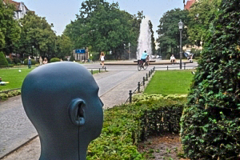
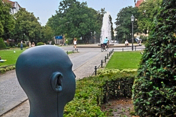

CSS-Transform Zoom bei Mouseover
Mouseover Transform Vergrößerung - funktioniert nicht im IE8 oder älter - im IE 10 und höher sowie im FF mit weichem Zoom
 

Hier ist die CSS für diesen Effekt. Hierbei ist z.B. 0.8s die Zeit des Zooms und 4.0,4.0 die Vergrößerung in der Breite und Höhe - hier also vierfach.
<style>
img.zoom {
transition: transform 0.8s;
-moz-transition: transform 0.8s;
-webkit-transition: transform 0.8s;
-o-transition: transform 0.8s;
-ms-transition: transform 0.8s;
}
img.zoom:hover {
cursor: zoom-in;
cursor: -moz-zoom-in;
cursor: -webkit-zoom-in;
transform: scale(4.0, 4.0);
-moz-transform: scale(4.0, 4.0);
-webkit-transform: scale(4.0, 4.0);
-o-transform: scale(4.0, 4.0);
-ms-transform: scale(4.0, 4.0);
}
</style>
Den Source-Code für die Bilder habe ich direkt in den HTML-Code Editor eines Textfeldes eingetragen, wobei hier das Bild dann die class=”zoom” aus der CSS oben erhält und die Anzeige des Thumbnails durch die Angabe der Größe bestimmt wird. Verwendet also Bilder ca. in der Größe die Ihr zoomen lasst, damit diese beim Zoomen nicht unscharf werden.
<img src="../images/Afrika-001.jpg" class="zoom" title="Elefant in Afrika" width="96" height="72">